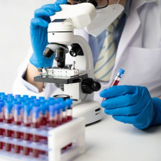
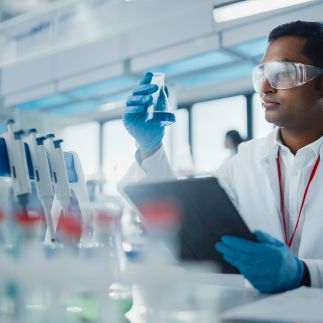
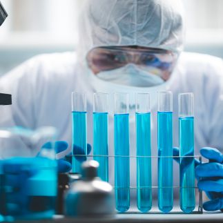

Get In Touch
Have questions about B.Sc. (Hons) Medical Laboratory Technology admissions?
Share a few details and our admissions counsellors will walk you through eligibility, fees, scholarships and the application timeline — no obligation.
- Fast Response — a counsellor calls back within 24 hours.
- One-on-One Guidance — personalised help with eligibility and documentation.
- No Obligation — ask questions before you decide to apply.
Fill this in and we'll reach out shortly.
Overview
B.Sc. (Hons) Medical Laboratory Technology
Embark on a transformative journey with the B.Sc. (Hons) Medical Laboratory Technology program at PES University, a comprehensive course designed to equip students with the essential skills and knowledge needed to navigate the real world of medical laboratory science.
This program lays the foundation for a successful career in diagnostic healthcare, offering a robust curriculum that blends theoretical learning with practical experience in state-of-the-art laboratory settings. Students will delve into key areas such as clinical biochemistry, microbiology, haematology, and immunology, gaining hands-on experience in conducting a range of diagnostic tests and procedures. The program emphasizes the critical role of medical laboratory technologists in patient care, diagnosis, and treatment, preparing students to make a meaningful impact in improving healthcare outcomes.
Graduates of the B.Sc. (Hons) Medical Laboratory Technology program will be adept in utilizing cutting-edge laboratory technology, ensuring accurate and timely diagnostic results. They will be prepared to work in various healthcare settings, including hospitals, diagnostic labs, research facilities, and pharmaceutical companies.


Eligibility
Pass in 10+2 or equivalent with Physics, Chemistry, English and Biology from a recognized Board, with minimum 50 % aggregate marks or equivalent in Physics, Chemistry and Biology
About the Programme
Why Study this Program at PES University?
Well qualified and experienced Doctors
PES University medical facility and college has the most well qualified and experienced doctors working on campus which will be a great advantage for all our students
Higher Studies Options
PES University will provide option for higher education for its students with benefits after their UG education as we have a full plethora of courses across domains to offer.
State-of-the-Art Facilities
PES University Electronic City campus where the program is offered has state of the art, world class facilities as below...
- Cutting edge labs
- NMC approved infrastructure and facilities
- Procedure centres relevant to all specializations
- World class cutting edge medical equipment’s
- Well stacked library with digital databases
- State of art multidisciplinary research centre
- Hostel facilities for both boys and girls
- Transportation facilities
- World class sports and recreation facilities on campus
1000 bed General Hospital and 300 bed Super-Speciality Hospital attached
This program is conducted at PES University Electronic City Campus in Bangalore; in which campus we have a fully equipped state-of-the-art 1000 bed general hospital along with 300 bed super-speciality hospital because of which our students get the most practical and hands-on exposure about the subject
Excellent Internships and Placements
Because of its voluminous infrastructure and requirements and excellent industry network, PES University offers high quality internship opportunities for its students along with placements after the program with assistance from its professional centralised placement cell.
Entrepreneurship Opportunities
PES University has a full-fledged Centre for Innovation and Entrepreneurship (CIE), which encourages the students to pursue the path of entrepreneurship through specific courses, bootcamps and Industry exposure activities. PES University also has PESU Venture Labs to fund the business ventures by our students.
Strong Alumni Network
PES University has a very strong Alumni network with thousands of successful alumni working in different areas around the globe. PES University will connect these alumni to all its existing students through its Alumni cell and our existing students can leverage the benefits of the professional alumni network of PES.
Is It For You?
Who should pursue this Program?
The B.Sc. (Hons) Medical Laboratory Technology program is tailor-made for individuals who have a keen interest in the healthcare sector and a passion for science and technology. It's an ideal choice for those who aspire to make a tangible difference in patient care by playing a crucial role in the diagnosis and treatment process. The program is suited for individuals with a meticulous attention to detail, problem-solving abilities, and a commitment to lifelong learning, given the ever-evolving nature of laboratory technologies and methodologies.
Students who are eager to work in diverse healthcare settings, including hospitals, diagnostic labs, and research facilities, will find ample opportunities to apply their skills and knowledge in this field. If you are driven by the prospect of contributing to healthcare innovation, enhancing patient outcomes, and navigating the real world of medical laboratory science, the B.Sc. (Hons) Medical Laboratory Technology program is the perfect pathway to turn your passion into a fulfilling career.
Placements
Placement Opportunities & Career Assistance
Placements has always been the USP of PES University since long. Professional placement assistance will be provided from the centralised placement cell of the University along with
an organised training in soft skills, aptitude, etiquettes, resume building etc… from the 1st semester itself to instil the necessary qualities for the student to succeed in campus placements.
Some of the prospective organizations where the students can build their career after graduating are as follows…
- Hospitals
- Healthcare Networks
- Medical Research Centres
- Medical Equipment Companies
- Private Clinics and Surgical Centres
- Government Healthcare Organisations
- Educational Institutions as Educators
Curriculum
Year-wise Curriculum Structure
- Human Anatomy
- Physiology
- Biochemistry I
- Pathology I (Clinical Pathology, Haematology & Blood Banking)
- Microbiology
- Biotechnology II
- Microbiology II
- Pathology II
- Biochemistry III
- Microbiology III
- Pathology III
*In addition to the main subjects mentioned above, there will be other additional subjects/ electives as a part of the curriculum as well as practical tests and lab components every year.
**Curriculum structure is subject to change without prior notice based on the recurring norms of our university.
Careers
Future Career Prospects after completing the Program
Some of the future career prospects for the graduates of B.Sc. (Hons) Medical Laboratory Technology students are as following
Medical Laboratory Technologist
Work in hospitals, private laboratories, or clinics, conducting essential diagnostic tests that contribute to patient care and treatment planning.
Research Scientist
Engage in research within pharmaceutical companies or research institutions, contributing to advancements in medical science and technology.
Clinical Biochemist
Specialize in analysing bodily fluids and tissues, playing a crucial role in diagnosing various medical conditions and diseases.
Microbiologist
Work in healthcare or research settings, studying microorganisms to understand and combat infectious diseases.
Haematologist
Focus on the study and analysis of blood and blood disorders, working in hospitals or specialized laboratories.
Immunologist
Work in research or clinical settings, studying the immune system and contributing to the development of vaccines and immunotherapies.
Quality Assurance Officer
Ensure that laboratory procedures and equipment meet industry standards and regulations in healthcare organizations or pharmaceutical companies.
Pharmaceutical Sales
Utilize knowledge of medical laboratory technology to promote and sell pharmaceutical products.
Educator
Share expertise by teaching aspiring medical laboratory technologists in academic institutions.
About the Programme
Programme Highlights
These highlights emphasize the program's commitment to providing a comprehensive, practical, and advanced educational experience for students, preparing them for excellence in the field beyond mere career prospects.

Comprehensive Curriculum
- The program offers a well-rounded curriculum that covers essential areas such as clinical biochemistry, microbiology, haematology, and immunology, ensuring students gain a deep understanding of each field.
Hands-On Experience
- Students have the opportunity to work in state-of-the-art laboratory settings, allowing them to apply theoretical knowledge to real-world situations, and gain practical skills in conducting various diagnostic tests and procedures.
Cutting-Edge Technology
- The program ensures that students are adept in using the latest laboratory technology and equipment, keeping them at the forefront of medical laboratory advancements.
Expert Faculty
- Students learn from experienced faculty members who are experts in their fields, benefiting from their insights, guidance, and real-world experience.


Emphasis on Patient Care
- The program highlights the critical role of medical laboratory technologists in patient care, ensuring students understand the impact of their work on diagnosis and treatment.
Research Opportunities
- Students have opportunities to engage in meaningful research projects, enhancing their learning experience and preparing them for future innovation in the field of medical laboratory technology.
Financial Support
Merit scholarships, awarded on performance
Over ₹140 crores in merit scholarships have been given to PES University students since 2014.
Merit Scholarships
Awarded on CGPA / SGPAProf. MRD Scholarships
Merit Certificate + 50% Tuition Fee Refund for Top 5% of the Students based on their CGPA.
Prof. CNR Rao Scholarships
Merit Certificate + 40% Tuition Fee Refund for the next 20% of the Students based on their SGPA.
Distinction Awards
Merit Certificate for Students securing 7.75+ SGPA.
PES Loyalty Program
Awarded on family / institutional ties, every year of studyPES Employees
Children of full-time staff, 5+ years employment.
PES Institution Students
Graduates of any PES institution or sister concern.
Siblings of Students
Siblings of currently enrolled PES students.
Alumni Family
Siblings and children of PES University alumni.
University Highlights
Recognition beyond the programme
The accreditations and rankings behind PES University as a whole.
University in Karnataka
Among new universities under 5 years, ranked by KSURF.
NAAC Accredited
PES University holds NAAC's top-grade accreditation nationally.
B-School in Karnataka
Times of India B-School Rankings, 2021.
Most Preferred B-School
Second only to IIM Bangalore among B-School aspirants, per Times of India.